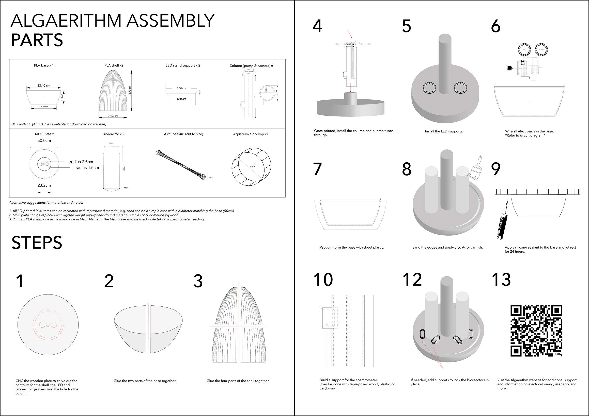
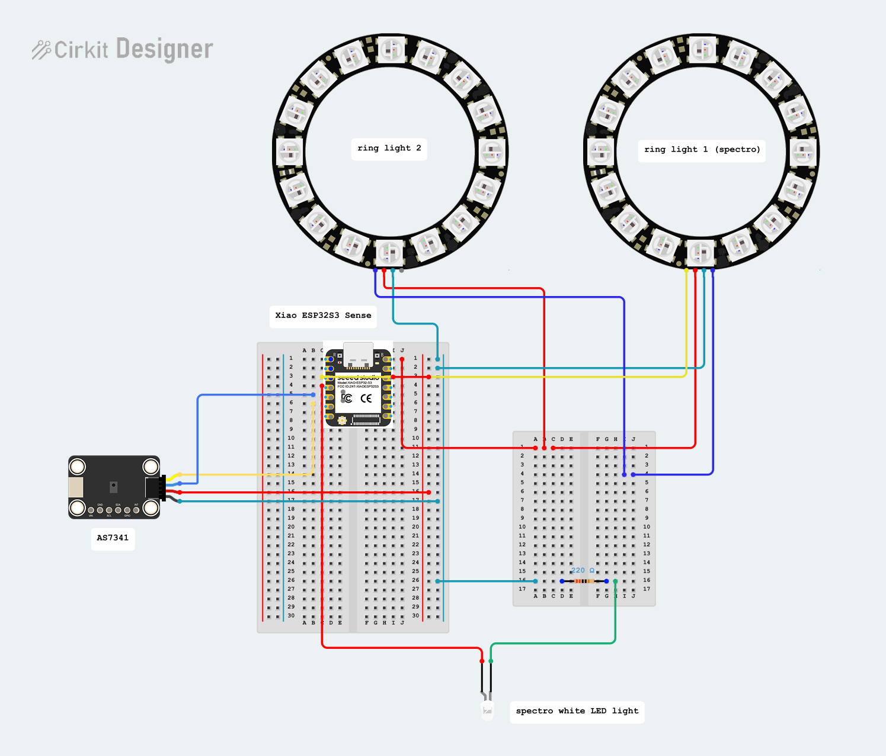
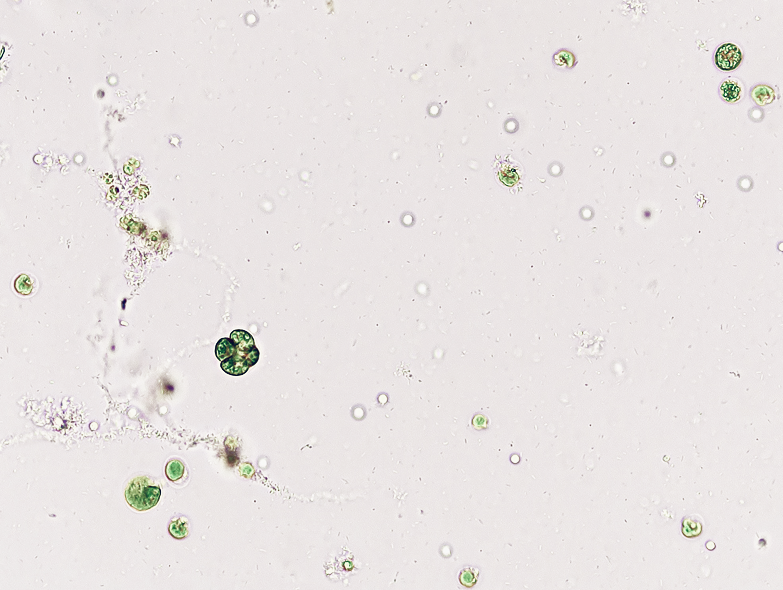
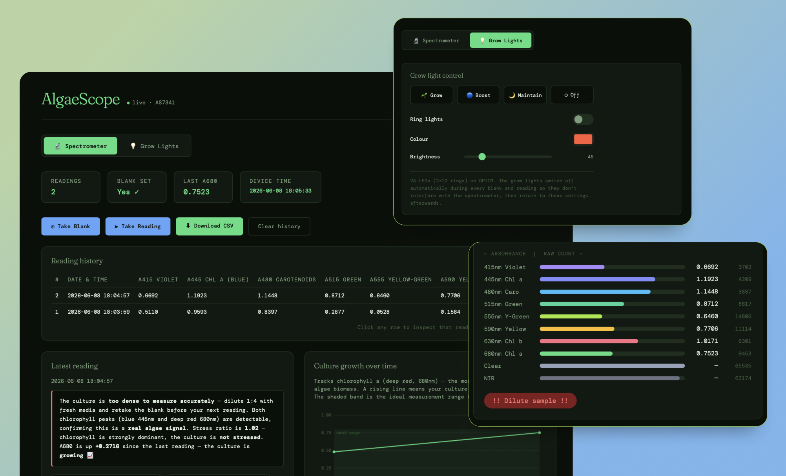
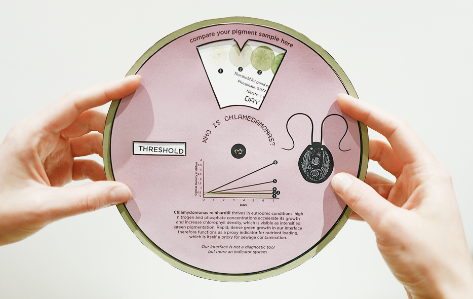

Algaerithm is open source. Everything you need to build a floating river pod — the 3D files, the electronics, the code, and the algae protocol — is here. This page is the friendly walkthrough; every file lives on GitHub if you want the detail.
The pod is a floating enclosure that holds a sample of river water and the electronics that watch it. Here's how to make the physical pod.

Two small boards do the work: a camera unit that photographs the pod and sends the image to the cloud, and the AlgaeScope — a spectrometer that measures the algae's colour across eight wavelengths.
Camera unit: a Seeed Studio XIAO ESP32S3 Sense. It uploads a photo to a free Adafruit IO account every few seconds, which is what appears live on the map. Full setup — including the Adafruit steps and the common pitfalls — is in the GitHub README.
AlgaeScope (spectrometer): a XIAO ESP32S3 with an AS7341 spectral sensor, an OLED display, and a white LED light source. It hosts its own dashboard on your WiFi (see Step 4).
Here's how everything wires together — the XIAO board, the AS7341 sensor, the white measurement LED, and the two NeoPixel ring lights, all on a breadboard.

Everything is off-the-shelf. You'll need two XIAO ESP32S3 Sense boards — one for the spectrometer, one for the camera.
| Component | What it's for | Qty | Link |
|---|---|---|---|
| XIAO ESP32S3 Sense | The brains. One runs the spectrometer, one runs the camera. | 2 | The Pi Hut → |
| Adafruit AS7341 sensor | 10-channel spectral sensor — reads the algae's colour. | 1 | The Pi Hut → |
| STEMMA QT → male headers cable | Connects the AS7341 to the breadboard. | 1 | The Pi Hut → |
| White 5mm LED | The measurement light source for the spectrometer. | 1 (pack of 25) | The Pi Hut → |
| Half-size breadboard | Holds the circuit together. | 1 | The Pi Hut → |
| NeoPixel ring lights (2×12 LED) | Grow lighting for the algae, controlled from the dashboard. | 2 | Amazon → |
You'll also need a 220 Ω resistor for the LED (commonly in any starter kit), basic jumper wires, and a microSD card if you want the camera to also save full-resolution photos locally.

The pod uses Chlamydomonas reinhardtii, a freshwater green alga, as its living sensor. You inoculate a starter culture into your river-water sample and let it grow.
You can order the Chlamydomonas reinhardtii culture from Blades Biological.

The AlgaeScope doesn't need a separate app to install — the device is the app. When it powers on it connects to your WiFi and runs a small dashboard you open in a web browser.
.local addresses, use
the numeric IP it prints to the Serial Monitor instead.)Because it runs on your local network, you view it on the same WiFi as the device — there's no public server or login. Readings are held in the device's memory while it's running.
▶ Open the live dashboard ↗Opens in a new tab — interactive demo loaded with sample readings from a real 7-day culture, not a live pod.
AlgaeScope code →
Colour is the data. The greener the sample, the higher the nutrient load in the water. This chart shows how to read what you're seeing.
Once your pod is streaming, email us at b.soares0520251@arts.ac.uk and we'll add it to the shared map alongside everyone else's. The more pods, the clearer the picture of our rivers becomes.
Full instructions on GitHub →